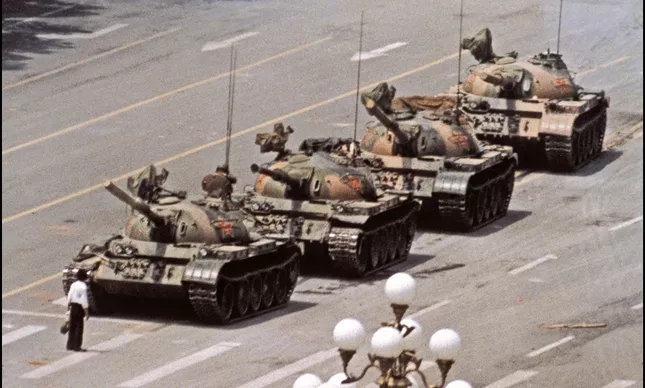

Direitos Humanos: conquista histórica, disputa permanente. Textos de revisão, 5 questões dissertativas e 5 questões objetivas. Preencha os dados para começar.
Por favor, digite seu nome para continuar.
Respondidas: 0/11
História / 3ª Série do Ensino Médio | (EM13CHS605 / GO-EMCHS605B) – Direitos HumanosRevisão Geral do Tema
Revisão Geral — Tema 3
Revise cada texto abaixo e responda às 5 questões dissertativas e às 5 questões objetivas.
NOME:DATA:TURMA:
✍️ Revisão e Questões Dissertativas
1. Da cidadania liberal ao Estado de Direito
Revisão — leitura para a 3ª série
Em março de 2018, a vereadora Marielle Franco foi assassinada no Rio de Janeiro por seu engajamento na defesa dos direitos humanos. O crime expôs uma disputa que atravessa a sociedade brasileira: para uma parte da população, os direitos humanos são conquistas civilizatórias que protegem a dignidade de todas as pessoas; para outra, são alvo de desconfiança e desinformação. Essa disputa só pode ser compreendida à luz de sua origem histórica: a ideia de que existem direitos pertencentes a toda pessoa, apenas por ela ser humana, não é natural — é resultado de um longo processo político.
No século XVIII, o Iluminismo questionou o absolutismo, sistema em que a autoridade do monarca era limitada apenas por costumes locais e por uma suposta origem divina do poder. Depois das revoluções inglesas, o rei Guilherme de Orange aceitou, em 1689, a Bill of Rights, que transferiu ao Parlamento o poder de legislar — marco inicial do Estado de Direito, modelo em que até o governante está submetido às leis. A Revolução Francesa consolidou esse processo com a Declaração dos Direitos do Homem e do Cidadão (1789), consagrando a cidadania liberal: desde então, os direitos humanos deveriam ser naturais, iguais e universais — mas, na prática, essas exigências sempre entraram em tensão com as desigualdades sociais, econômicas, raciais e de gênero.
1 A afirmação de que os direitos humanos são "resultado de um longo processo político", e não algo natural ou dado, ajuda a explicar por que sua defesa ainda hoje divide a sociedade brasileira, como evidenciou o assassinato de Marielle Franco. Desenvolva essa relação, explicando de que forma a origem histórica desses direitos — do questionamento ao absolutismo até a consolidação do Estado de Direito — contribui para entender por que sua legitimidade continua sendo disputada politicamente.
0 caracteres (mínimo 80)
Comentário do professor
Espera-se que o aluno explique que, por serem uma construção histórica e não um dado natural, os direitos humanos resultaram de disputas políticas (Iluminismo x absolutismo, revoluções x poder divino) e continuam sujeitos a interesses divergentes; a tensão entre a promessa de igualdade/universalidade e as desigualdades reais explica por que, ainda hoje, sua legitimidade é questionada e sua defesa pode gerar violência política, como no caso de Marielle Franco.
2. A Declaração Universal dos Direitos Humanos (1948)
Revisão — leitura para a 3ª série
Os crimes da Segunda Guerra Mundial — o extermínio de judeus, ciganos, pessoas com deficiência e homossexuais nos campos nazistas, além das bombas atômicas em Hiroshima e Nagasaki — representaram uma ruptura sem precedentes na violência contra populações civis. Diante disso, a ONU aprovou, em 10 de dezembro de 1948, a Declaração Universal dos Direitos Humanos (DUDH), apoiada em quatro pilares: dignidade, liberdade, igualdade e fraternidade.
Por sua importância, a DUDH passou a servir de base para tratados internacionais e constituições democráticas, inclusive a Constituição brasileira de 1988. Ainda assim, o documento tem limites: por vincular-se sobretudo aos direitos civis e políticos, tratou de forma secundária os direitos econômicos e sociais, e deixou a cada país a tarefa de criar mecanismos concretos para garantir e fiscalizar esses direitos em seu território.
2 A Declaração de 1948 tratou "de forma secundária os direitos econômicos e sociais" e delegou a cada país a tarefa de criar mecanismos para garanti-los. Explique por que essa limitação mostra que a existência de uma declaração internacional de direitos não garante, por si só, sua efetivação, e relacione essa lacuna com a necessidade histórica de leis e convenções voltadas a grupos específicos.
0 caracteres (mínimo 80)
Comentário do professor
Espera-se que o aluno explique que um documento internacional declara princípios gerais, mas não cria, por si, instituições capazes de aplicá-los; como a DUDH priorizou direitos civis e políticos e delegou aos Estados a efetivação dos direitos sociais e econômicos, foi necessário que a ONU elaborasse convenções específicas (contra o racismo, contra a discriminação da mulher, da criança, da pessoa com deficiência) e que cada país aprovasse leis próprias para transformar o princípio declarado em direito efetivamente garantido.
3. Os direitos humanos na Constituição de 1988
Revisão — leitura para a 3ª série
O fim da ditadura civil-militar abriu caminho para a Assembleia Constituinte (1986–1988), que teve ampla participação da sociedade civil — cerca de 72 mil sugestões populares deram origem a emendas incorporadas ao texto final, conhecido como Constituição Cidadã. Entre suas conquistas estão o fim da censura e da tortura como práticas de Estado, a criminalização do racismo e a criação do SUS.
Povos indígenas se mobilizaram, viajando e acampando em frente ao Congresso, e conquistaram o reconhecimento de suas formas de organização social e o direito à posse permanente das terras tradicionalmente ocupadas: até 2024, 784 Terras Indígenas haviam sido registradas no país. Comunidades quilombolas obtiveram conquista semelhante quanto ao direito às terras herdadas de seus antepassados; ainda assim, o processo de reconhecimento e titulação dessas terras permanece lento: até 2024, havia 1.775 terras quilombolas reconhecidas no Brasil, mas apenas 172 definitivamente tituladas.
3 Embora a Constituição de 1988 tenha garantido a povos indígenas e comunidades quilombolas o direito às suas terras, os números apresentados revelam um descompasso entre essa garantia e sua efetivação (784 Terras Indígenas registradas, contra apenas 172 das 1.775 terras quilombolas tituladas). Analise esse descompasso, explicando o que ele revela sobre a diferença entre a existência formal de um direito e sua efetivação concreta.
0 caracteres (mínimo 80)
Comentário do professor
Espera-se que o aluno explique que um direito estar escrito na Constituição não significa que ele seja imediatamente cumprido: a titulação de terras depende de processos administrativos, orçamento, vontade política e correlação de forças entre grupos interessados, de modo que o reconhecimento formal (jurídico) e a efetivação prática (titulação concreta) são etapas distintas — e a lentidão da segunda mostra que garantir direitos exige mobilização e disputa política contínuas, não apenas a existência da lei.
4. O Homem dos Tanques e a Resistência aos Regimes Autoritários
Revisão e Análise de Documento Visual
Em junho de 1989, a Praça da Paz Celestial (Tiananmen), em Pequim, foi palco do violento massacre promovido pelo governo chinês contra civis desarmados que reivindicavam liberdade de expressão, reformas democráticas e combate à corrupção. No dia 5 de junho, logo após a violenta repressão militar, o fotógrafo americano Jeff Widener registrou, da varanda de um hotel, a histórica cena de um homem solitário carregando sacolas de compras em frente a uma coluna de blindados do exército chinês.
Trecho de Reportagem — Blog do Acervo / O Globo
"Eu estava apavorado. (...) Pensei: 'Esse cara vai ser morto bem na minha frente'. Eu estava esperando o pior. Mas ele continuava se movendo na frente do tanque para impedi-lo de passar." O fotógrafo escondeu o rolo de filme na cueca de um estudante americano que viajou com o material até o escritório da agência de notícias para enviá-lo ao mundo. Até hoje, a identidade do manifestante permanece um mistério e a imagem é alvo de rígida censura pelo Estado chinês.
4Observe atentamente a imagem histórica ("O Homem dos Tanques") e leia o relato do fotógrafo Jeff Widener. A partir desses documentos, faça uma análise crítica e infira sobre os direitos humanos, respondendo aos itens a seguir.

Figura: O manifestante solitário ("Tank Man") bloqueia a coluna de tanques Type 59 na Avenida Chang'an, Pequim (1989). Foto: Jeff Widener / AP.
a) Explique a desproporção entre o poder repressivo do Estado e a resistência civil individual em defesa de liberdades fundamentais.
0 caracteres (mínimo 60)
b) Explique o papel da censura estatal e do registro fotográfico na disputa pela memória e pela garantia dos direitos humanos.
0 caracteres (mínimo 60)
Comentário do professor
Espera-se que o aluno articule os seguintes pontos:
a) Resistência x Repressão Estatal: A imagem simboliza a coragem da resistência civil pacífica frente à força bélica desmedida do Estado. Representa a luta por direitos humanos inalienáveis (liberdade de expressão, reunião, direito à vida e à dignidade) contra o autoritarismo e a opressão militar.
b) Direito à Memória e Informação: O esforço clandestino para contrabandear o filme fotográfico e a posterior censura imposta pelo governo chinês evidenciam que o direito à verdade e à memória histórica é parte indissociável da defesa dos direitos humanos. Onde há apagamento e repressão da informação, perpetua-se a impunidade e a violação de direitos fundamentais.
5. Conquistas e desafios dos movimentos sociais
Revisão — leitura para a 3ª série
A maior parte das conquistas em direitos humanos resultou da mobilização de movimentos sociais: a luta antirracista levou os Estados Unidos a aprovar a Lei dos Direitos Civis (1964) e a África do Sul a abolir o apartheid (1994); o movimento feminista conquistou, em diversos países, o direito ao voto e a licença-maternidade; desde os anos 1970, o movimento LGBTQIAPN+ ampliou o reconhecimento de direitos civis para diferentes orientações sexuais e identidades de gênero. No Brasil, o movimento indígena avançou na demarcação de terras, e o MST e o MTST lutam por reforma agrária e moradia, direitos já previstos na própria Constituição de 1988.
Essas conquistas convivem com permanências históricas: pessoas negras seguem em situação socioeconômica desigual e são as principais vítimas de ações policiais letais; mulheres continuam expostas a violência de gênero; pessoas LGBTQIAPN+ são alvo frequente de preconceito; povos indígenas e quilombolas seguem lutando pela posse efetiva de suas terras. Como conclui o material: essas permanências "não tornam as lutas passadas inúteis — mostram, ao contrário, que garantir direitos exige vigilância constante sobre conquistas já obtidas, e não apenas a conquista de novos direitos".
5 O material afirma que as desigualdades que "permanecem", apesar das conquistas dos movimentos sociais, não tornam as lutas passadas inúteis, mas mostram que garantir direitos exige "vigilância constante". Desenvolva essa ideia, relacionando pelo menos duas conquistas históricas de movimentos sociais citadas no texto com desafios que, segundo o próprio material, ainda persistem atualmente.
0 caracteres (mínimo 80)
Comentário do professor
Espera-se que o aluno cite ao menos duas conquistas (por exemplo, criminalização do racismo/Lei dos Direitos Civis e Lei Maria da Penha/direitos das mulheres) e relacione cada uma a uma permanência correspondente (violência policial letal contra a população negra; violência de gênero e desigualdade salarial contra as mulheres), concluindo que direitos conquistados podem ser corroídos na prática se não houver mobilização contínua — ou seja, a conquista formal de um direito é o início, não o fim, da luta por sua efetivação.
📝 Questões Objetivas
Texto para as questões 1, 2 e 3
Revisão — leitura para a 3ª série
Em abril de 1989, estudantes, operários e intelectuais chineses iniciaram um movimento por reformas democráticas, exigindo maior participação política, liberdade de expressão e de imprensa, redução da desigualdade social e combate à corrupção no Partido Comunista Chinês, no poder desde 1949. Em maio, milhares de manifestantes ocuparam a Praça da Paz Celestial, em Pequim, e iniciaram uma greve de fome; cerca de 1 milhão de pessoas chegaram a se concentrar no local em apoio ao movimento.
O governo respondeu com a lei marcial e, em 3 de junho, ordenou que tropas e veículos blindados avançassem sobre a multidão. Estima-se entre 2 mil e 5 mil mortos nos confrontos — as autoridades chinesas reconhecem oficialmente apenas 200. O episódio sufocou um dos eventos mais marcantes da luta por direitos humanos do século XX e permanece, até hoje, como um tema de debate político restrito na China.
1 O episódio da Praça da Paz Celestial, tal como narrado no texto, funciona, no conjunto do material sobre direitos humanos, sobretudo como evidência de que:
A
movimentos por reformas democráticas só obtêm sucesso quando ocorrem em países que já possuem tradição de Estado de Direito.
B
a repressão a manifestantes é uma prática restrita a regimes de partido único, não ocorrendo em outros sistemas políticos.
C
as conquistas em direitos humanos não são automáticas nem definitivas, podendo sofrer repressão estatal em diferentes contextos políticos.
D
a Declaração Universal de 1948 não teve nenhuma influência sobre movimentos sociais fora do continente europeu.
Gabarito: C. O episódio é apresentado no material justamente para ilustrar que a defesa de direitos "frequentemente é alvo de repressão estatal — um lembrete de que essas conquistas nunca são automáticas nem definitivas", em qualquer contexto histórico e político, não apenas em regimes de partido único (o que descarta B) nem de forma condicionada a tradições prévias de Estado de Direito (o que descarta A).
2 A discrepância entre o número de mortos estimado por historiadores (entre 2 mil e 5 mil) e o número reconhecido oficialmente pelo governo chinês (200) é significativa, sobretudo, porque revela que:
A
os historiadores ocidentais tendem a exagerar sistematicamente os números de vítimas em conflitos ocorridos fora de seus países.
B
o controle da memória e da informação sobre episódios de repressão é, em si, uma forma de disputa em torno da efetivação e do reconhecimento de direitos.
C
é impossível saber, ainda hoje, se o movimento de 1989 de fato ocorreu, dada a falta de consenso sobre o número de vítimas.
D
o número real de vítimas é uma informação irrelevante para a compreensão histórica do episódio.
Gabarito: B. O texto indica que o tema "permanece, até hoje, como um debate político restrito na China": a diferença entre as estimativas mostra que o próprio relato dos fatos — quantas pessoas morreram, o que aconteceu — é disputado pelo Estado, o que é uma forma de negar ou minimizar a violação de direitos ocorrida, e não uma questão de exagero de historiadores ou de irrelevância factual.
3 As reivindicações dos manifestantes de Pequim — "maior participação política, liberdade de expressão e de imprensa, redução da desigualdade social e combate à corrupção" — dialogam diretamente com quais dos pilares que sustentam a Declaração Universal dos Direitos Humanos de 1948?
A
Liberdade e igualdade, na medida em que as reivindicações envolvem participação política, expressão livre e redução de desigualdades.
B
Exclusivamente a dignidade, já que as demais reivindicações eram de natureza puramente econômica.
C
Nenhum dos pilares da Declaração, pois esta se aplica apenas a países ocidentais signatários originais do documento.
D
Somente a fraternidade, uma vez que o movimento se baseava em laços de solidariedade entre os manifestantes.
Gabarito: A. A Declaração de 1948 apoia-se em dignidade, liberdade, igualdade e fraternidade, elegendo entre os direitos inalienáveis a liberdade e a igualdade perante a lei. As reivindicações de Pequim — participação política e liberdade de expressão (liberdade) e redução da desigualdade social (igualdade) — dialogam diretamente com esses princípios, que a Declaração define como universais, e não restritos a países ocidentais.
Texto para as questões 4 e 5
Revisão — leitura para a 3ª série
Trecho I — Declaração Universal dos Direitos Humanos (1948), Artigo 1º
"Todos os seres humanos nascem livres e iguais em dignidade e direitos. São dotados de razão e consciência e devem agir em relação uns aos outros com espírito de fraternidade."
Diretamente inspirada na Declaração dos Direitos do Homem e do Cidadão de 1789, a DUDH passou a servir de base para constituições democráticas em todo o planeta. A Constituição brasileira de 1988 incorporou esse princípio de duas formas: no artigo 4º, ao estabelecer a prevalência dos direitos humanos entre os princípios que regem as relações internacionais do país; e no artigo 5º, ao considerar fundamentais a igualdade entre homens e mulheres, a liberdade de expressão, a liberdade religiosa e a igualdade perante a lei. Diferentemente da Declaração de 1948 — que, por vincular-se sobretudo aos direitos civis e políticos, tratou de forma secundária os direitos econômicos e sociais —, a Constituição de 1988 ampliou esse alcance ao viabilizar a criação do Sistema Único de Saúde (SUS), de um sistema previdenciário unificado e de direitos trabalhistas como a jornada máxima de 44 horas semanais.
4 A incorporação, pela Constituição de 1988, da prevalência dos direitos humanos como princípio das relações internacionais do Brasil (art. 4º) representa, em relação à Declaração de 1948, um exemplo de:
A
substituição, já que a Constituição brasileira rejeitou os princípios da Declaração de 1948 para criar um sistema próprio e independente.
B
coincidência histórica, sem relação direta de influência entre o documento internacional de 1948 e o texto constitucional de 1988.
C
restrição, pois o artigo 4º limita a aplicação dos direitos humanos exclusivamente às relações do Brasil com outros países.
D
internalização, na ordem jurídica nacional, de um princípio originalmente formulado em um documento de alcance internacional.
Gabarito: D. O texto explica que a DUDH "passou a servir de base para tratados internacionais e para constituições democráticas em todo o planeta, inclusive a Constituição brasileira de 1988". Ao consagrar a prevalência dos direitos humanos em seu artigo 4º, a Constituição não rejeita nem apenas coincide com a Declaração: ela internaliza, no ordenamento jurídico nacional, um princípio de origem internacional — o que também se reflete no artigo 5º, de aplicação interna, e não só nas relações exteriores.
5 Em relação aos limites da Declaração de 1948 quanto aos direitos econômicos e sociais, a Constituição de 1988, segundo o texto, buscou superá-los ao:
A
delegar integralmente a organismos internacionais a criação e a fiscalização de políticas de saúde e previdência no Brasil.
B
manter o mesmo tratamento secundário dado pela Declaração de 1948 aos direitos econômicos e sociais, priorizando apenas os civis e políticos.
C
criar mecanismos concretos de efetivação de direitos sociais, como o SUS, a previdência unificada e a jornada máxima de trabalho.
D
eliminar do texto constitucional qualquer menção aos direitos civis e políticos previstos originalmente na Declaração de 1948.
Gabarito: C. O texto afirma explicitamente que, diferentemente da Declaração de 1948, "a Constituição de 1988 ampliou esse alcance ao viabilizar a criação do Sistema Único de Saúde (SUS), de um sistema previdenciário unificado e de direitos trabalhistas como a jornada máxima de 44 horas semanais" — ou seja, criou instituições e leis concretas para efetivar direitos que a Declaração apenas enunciara em princípio, sem delegar essa tarefa a organismos internacionais nem abandonar os direitos civis e políticos.
⚠️ Ainda há questões incompletas (dissertativas com o mínimo de caracteres e todas as 5 objetivas marcadas). Revise antes de finalizar.
🎉
Atividade concluída!
Suas respostas foram registradas. Os comentários do professor e o gabarito comentado já estão disponíveis abaixo de cada questão para você comparar com o que escreveu.